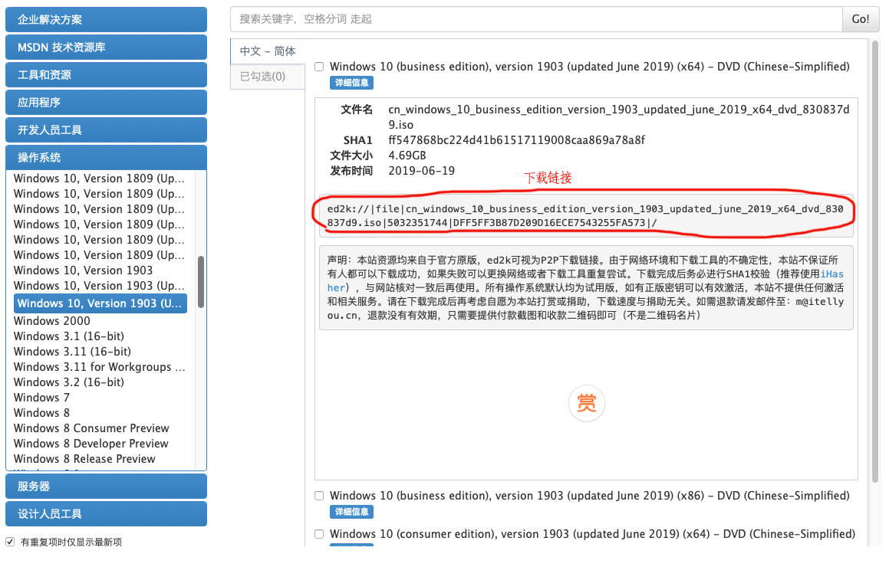
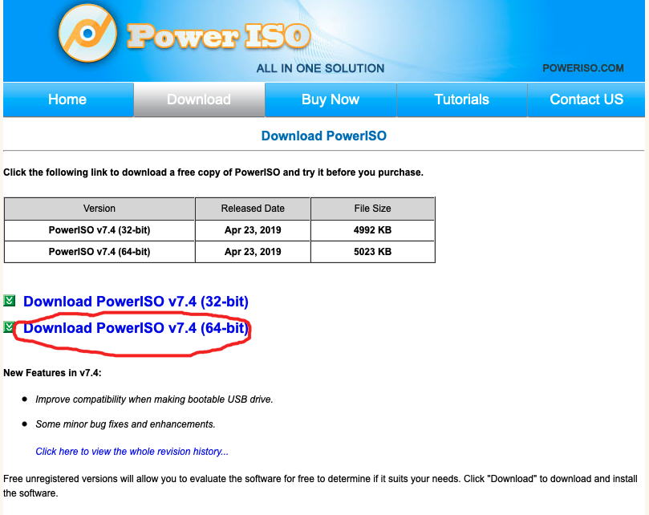

Algorithms change the world. For a programmer, the importance of algorithms is self-evident, so the practice of some algorithms is indispensable. Next, I will share some algorithmic problems.
文件备份
把C盘里面有用的文件复制到其他盘里，如果C盘大小不够的话，最好把D盘有用的文件也备份一下，这篇博客后面有分区合并的教程，可以把C盘和D盘合并成为一个盘，用来装系统。推荐系统盘最少为100G，如果经常用一些大的软件的话，C盘可以再大点，笔者的系统盘150G都不够用，自己对比一下，视自己的需求调整C盘大小。下面是我安装的一些主要软件截图
系统镜像下载
系统镜像下载网址 MDSN I Tell You , 选择想安装的系统，使用迅雷进行下载。

系统安装 U 盘制作
首先准备一个空U盘，空间4G及以上，制作启动盘的时候U盘是需要格式化的，里面不要存储什么重要的东西。然后下载PowerISO，进入主页之后点击 Download，然后点击 Download PowerISO v7.4(64-bit) 下载。软件是收费的，但是你可以选择免费试用。

Power ISO 使用的时候需要以管理员身份运行，这样才能刻录 U 盘。
在 Power ISO 中打开下载的系统镜像文件，然后点击 menu bar --> Tools --> Create bootable USB drive，在弹出的窗口中的 Destination USB drive 中选择 自己的 U 盘，然后点击 Start 就行了，等执行完毕之后系统安装 U 盘就制作好了。
系统安装盘的制作还有好多其他工具，如 UltraISO等，或者可以使用 PE，如老毛桃PE、大白菜PE等，具体操作比较简单，这里不做详述。
系统安装
系统安装之前备份好电脑中的内容，以免资料丢失。
然后就启动 BIOS 系统，BIOS 全称是 Basic Input Output System，是一组固化到计算机内主板上一个ROM芯片上的程序，它保存着计算机最重要的基本输入输出的程序、开机后自检程序和系统自启动程序，它可从CMOS中读写系统设置的具体信息。 其主要功能是为计算机提供最底层的、最直接的硬件设置和控制。此外，BIOS还向作业系统提供一些系统参数。系统硬件的变化是由BIOS隐藏，程序使用BIOS功能而不是直接控制硬件。现代作业系统会忽略BIOS提供的抽象层并直接控制硬件组件。
关机之后插入 U 盘，在开机的时候长按快捷键（联想一般为 F2，台式机一般为 delete，其他还有 F6、F8的，具体根据自己的电脑型号决定），之后会进入 BIOS 设置界面。
在 Boot 中更改启动项为插入的 U 盘，老系统一般要开启 Legacy Support。之后根据右侧菜单中的说明（联想是 F6 上移，F10 保存），保存之后会进入安装程序。
驱动以及相关设置
安装之后驱动一般去品牌官网下载相应的驱动或者使用第三方的驱动安装工具，如驱动精灵、驱动人生等安装相应的驱动，比较简单，不详述。
合并分区
windows 提供了合并分区的工具，非系统分区的合并使用 windows 自带的工具已经够了。
搜索 computer management， 在 disk management 中就能看到自己电脑中的各个分区，选中右击就可以进行相应的操作。
如果涉及到系统分区或者 windows 自带的没法分区的时候，可以使用第三方的分区工具，如 傲梅分区助手等，或者直接使用 PE 系统中集成的分区工具进行分区，方法比较简单，这里不再详述。

欢迎访问 dusign 的博客，博客系统一键分享的功能还在完善中，请大家耐心等待。 若有问题或者有好的建议欢迎留言，笔者看到之后会及时回复。 评论点赞需要github账号登录，如果没有账号的话请点击 github 注册， 谢谢 !
If you like this blog or find it useful for you, you are welcome to comment on it. You are also welcome to share this blog, so that more people can participate in it. If the images used in the blog infringe your copyright, please contact the author to delete them. Thank you !